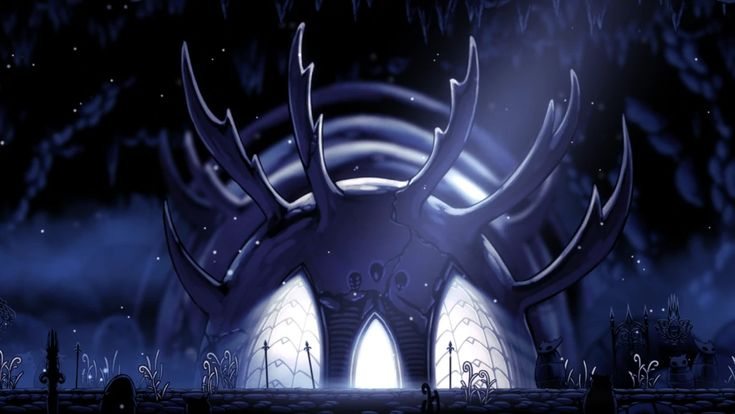
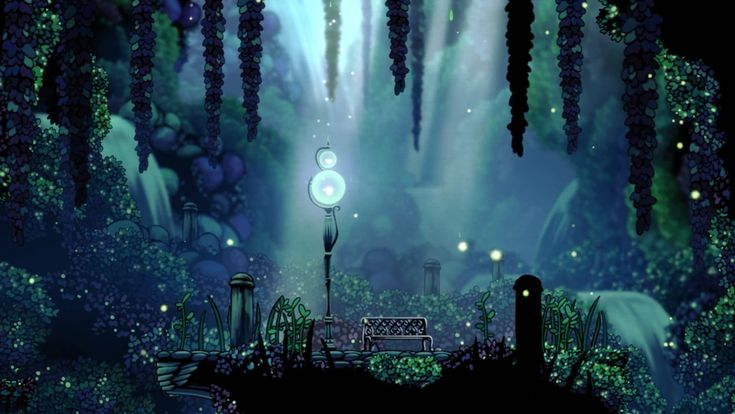
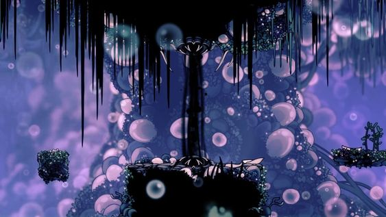
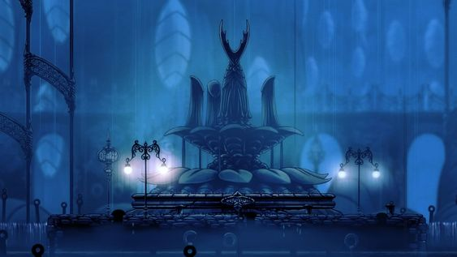
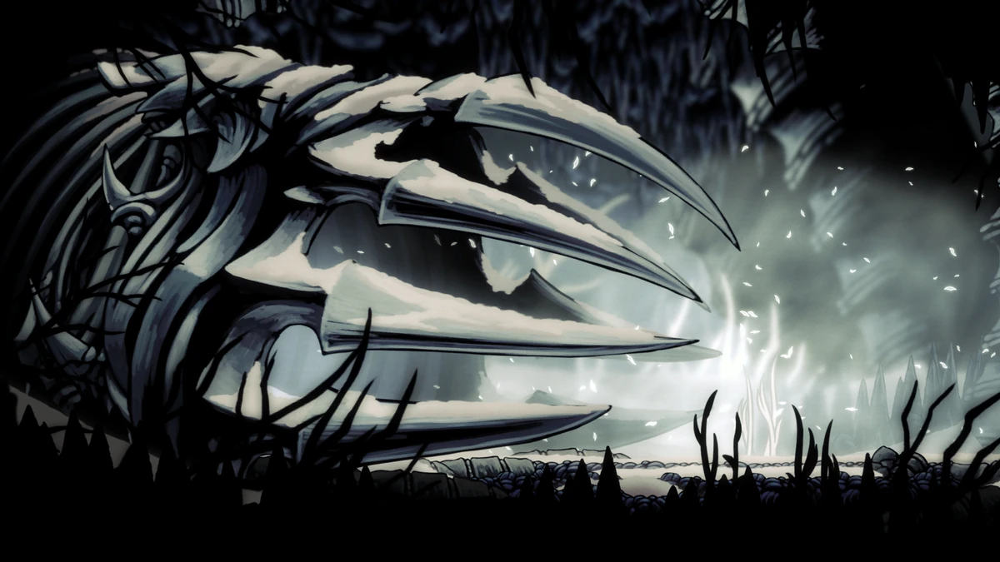
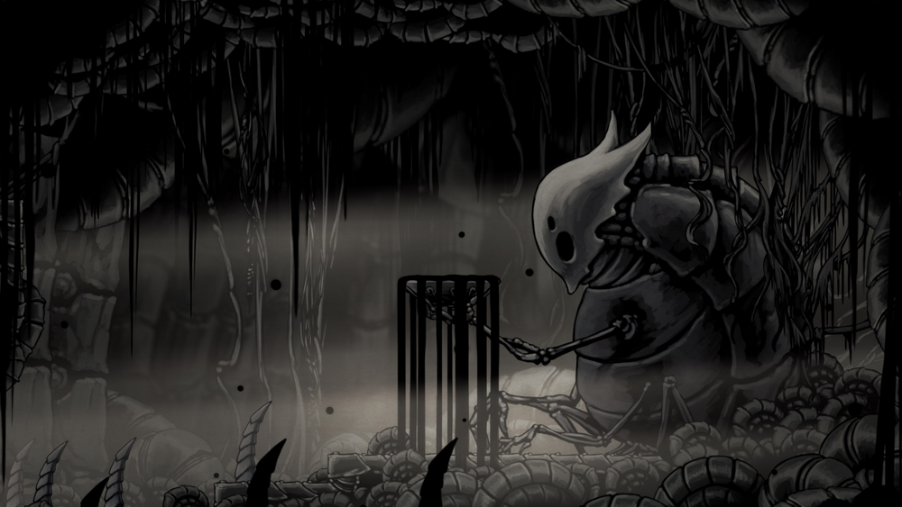

The world of Hollow Knight
The world of Hollow Knight is a vast and intricately designed labyrinth consisting of 18 regions, with each area offering a distinct and memorable experience. From the moment players descend into the forgotten kingdom of Hallownest, they are greeted by the sprawling and dilapidated Forgotten Crossroads, a maze of crumbling pathways and overgrown foliage that sets the tone for the game's melancholic atmosphere.
As players delve deeper, they encounter a diverse array of environments, each with its own unique challenges and inhabitants. The Greenpath, a verdant and serene area, is home to lush vegetation and tranquil waterways, but also harbors dangerous foes like the hulking Moss Knights and the venomous Moss Chargers. In contrast, the Fungal Wastes are a damp and oppressive realm, where the spore-laden air obscures vision and the grotesque Fungi enemies lurk in the shadows.
 One of the most striking areas in Hollow Knight is the City of Tears, a once-grand metropolis now reduced to a melancholic ruin. Its towering spires and cascading waterfalls create a hauntingly beautiful backdrop, while the relentless onslaught of Mantis Petras and the formidable Watcher Knights test the player's combat skills.
Venturing deeper into the depths of Hallownest, players encounter the scorching Deepnest, a nightmarish labyrinth of twisted tunnels and ancient caverns. Here, the dreaded Nosk stalks its prey, and the terrifying Deeplings emerge from the darkness, their piercing shrieks echoing through the twisted tunnels.
The Royal Waterways, a vast network of subterranean canals and reservoirs, present a different challenge, with treacherous platforming sections and the relentless onslaught of Flukemon and Oblobbles. And in the Ancient Basin, players must navigate the crumbling ruins and contend with the formidable Broken Vessel and the enigmatic Pale Creatures.
 But it is the game's bosses that truly test the mettle of even the most seasoned players. The Mantis Lords, a trio of deadly warriors, demand precision and timing, while the Watcher Knights, with their synchronized attacks and crushing blows, are a true test of endurance. And for those brave enough to venture into the deepest recesses of Hallownest, the fearsome Radiance, a moth-like entity of pure light, awaits, presenting one of the most challenging and exhilarating boss battles in gaming history.